19 años de ti y 9 meses construyendo poquito a poquito nuestro propio nidito de amor.
Entrar a nuestro nidito 🪺❤️No quiero recordar cómo comenzó nuestra historia. Quiero recordar todo lo bonito que hemos ido construyendo desde entonces.
Mi Princesa Hermosa,
Entre mensajes, llamadas, risas, preocupaciones, diferencias, buenos días y buenas noches, fuimos construyendo nuestro propio nidito. Un lugar que no necesita cuatro paredes para sentirse como hogar.
En ti siento un refugio que me da paz y me motiva a seguir hacia delante. Admiro tu forma de pensar, tu madurez, tu hermosa personalidad, lo reservada y educada que eres, y esa manera que tenemos de buscar juntos el lado positivo y una solución.
Yo quiero ser para ti lo mismo que tú eres para mí: tu compañero, tu protector y tu lugar seguro. Mi deseo sigue siendo darte amor, cuidarte y hacer todo lo que esté en mis manos para verte bien y feliz. ❤️
Algunas palabras se escribieron en segundos, pero se quedaron conmigo por mucho más tiempo.
Aquí ya puedes ver cómo quedan las capturas reales dentro de la página. En celular se acomodan automáticamente una debajo de otra.
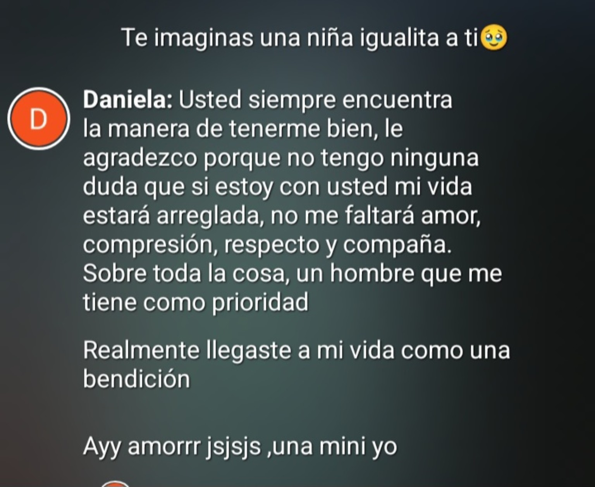
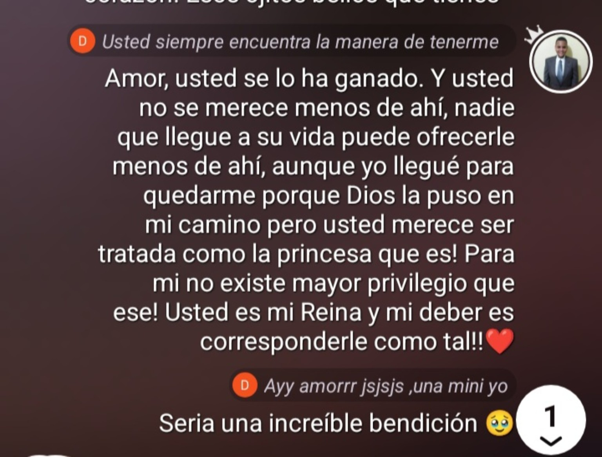
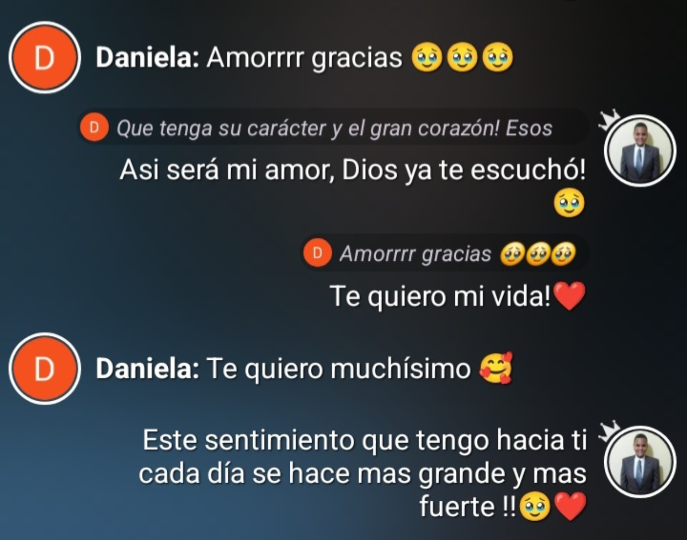
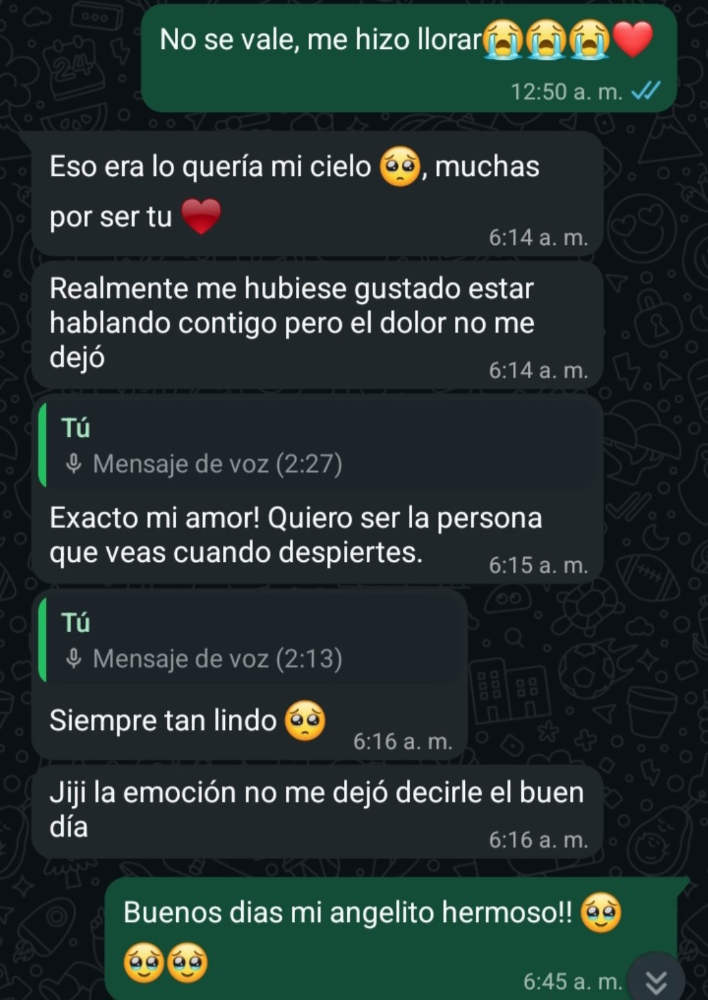
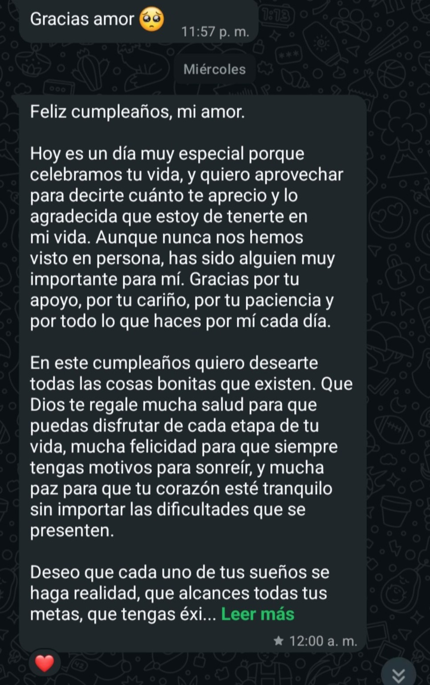
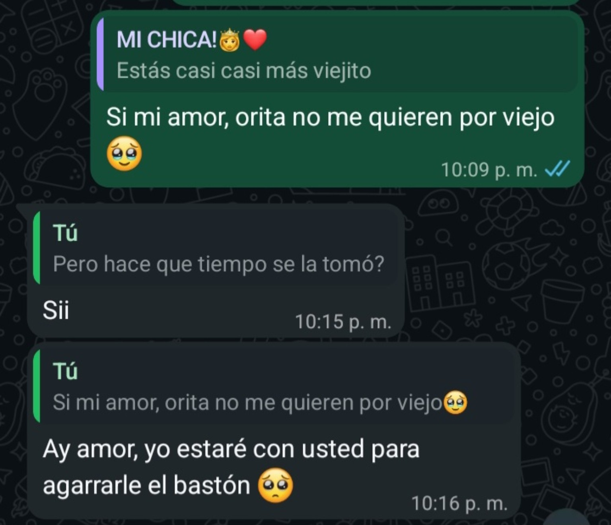
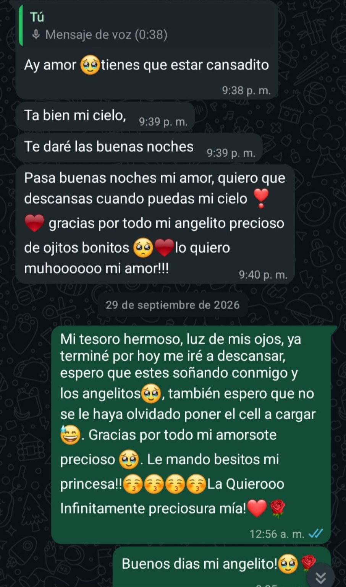
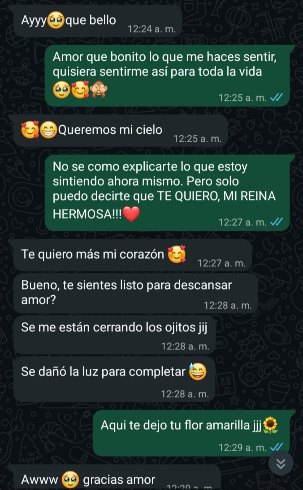
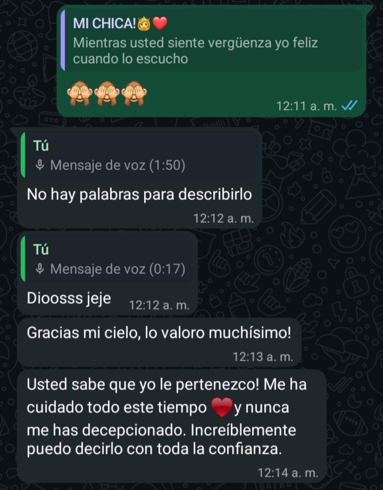
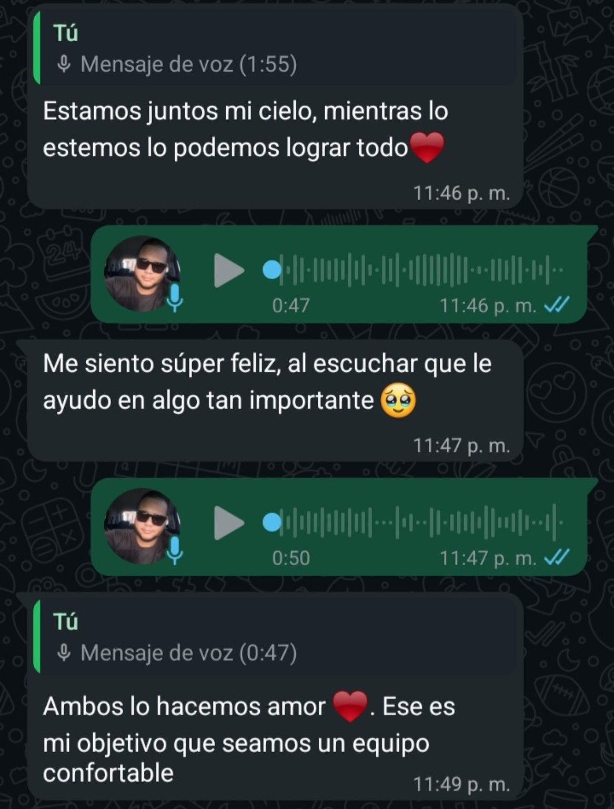
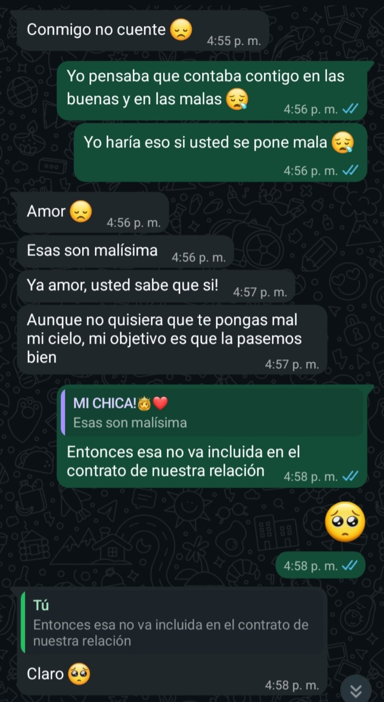
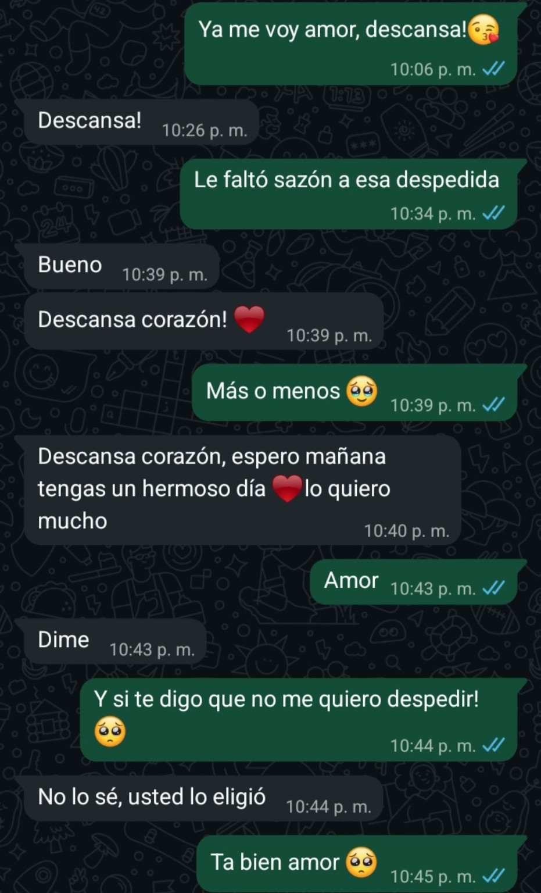
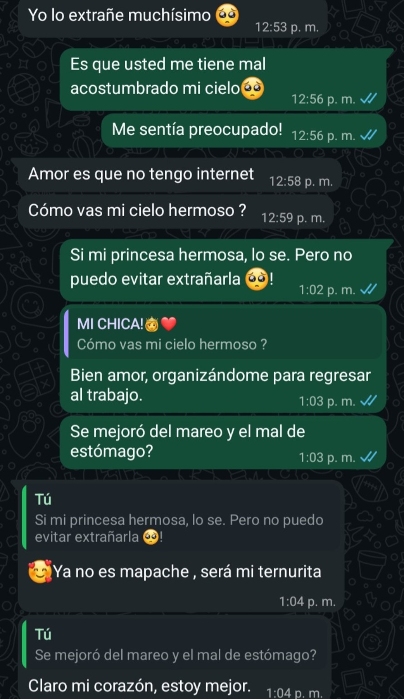
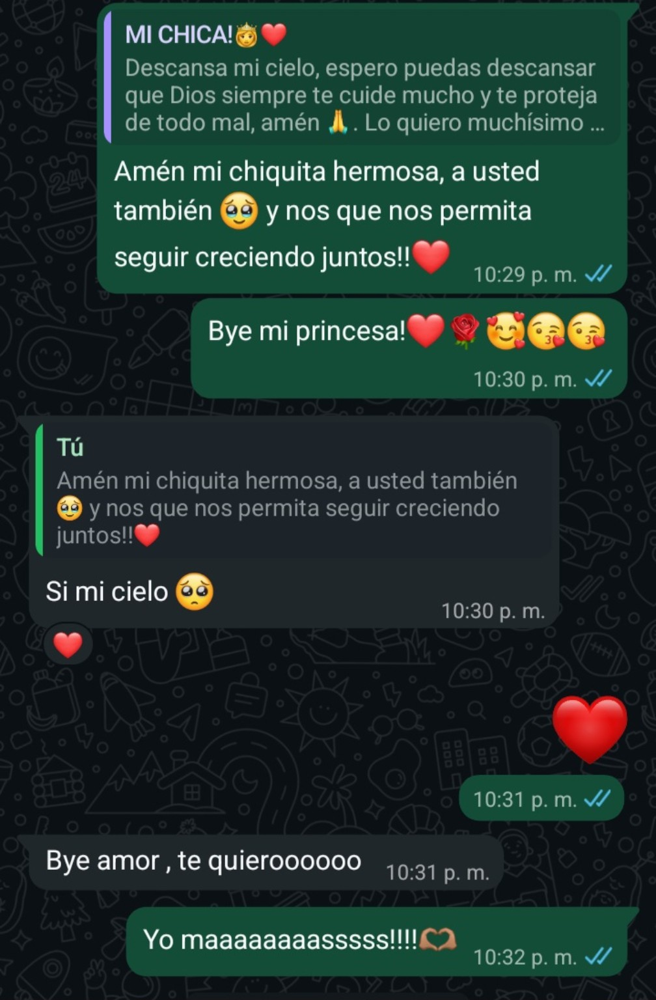
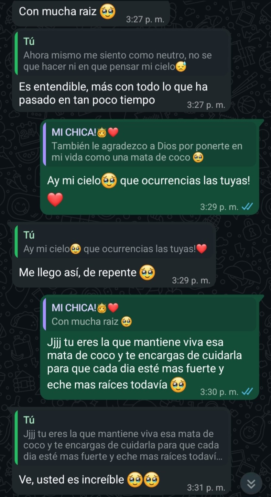
Piensa en todo lo que hemos construido sin poder abrazarnos todavía. Si desde lejos hemos logrado sentirnos así de cerca, imagina todo lo que nos espera.
Yo también lo imagino. Sobre todo ese primer abrazo que llevamos tantos meses guardando. Algún día ya no habrá pantalla: vas a estar ahí… y yo también. ❤️
Hay historias que empiezan con flores… la nuestra aparentemente necesitaba una mata de coco 😂❤️. Aquí seguimos, cuidándola para que cada día esté más fuerte y eche más raíces.
Nuestro primer abrazo.
No sé qué voy a decir cuando por fin te tenga frente a mí. Quizás ni siquiera necesite decir mucho. Solo sé que quiero abrazarte fuerte y sentir que, después de tantos mensajes, llamadas y “te extraño”, por fin ya no habrá una pantalla entre nosotros.
Vas a estar ahí.
Y yo también. ❤️
Mi promesa para ti:
No puedo prometerte una historia perfecta, pero sí puedo prometerte que haré todo lo que esté en mis manos para verte bien y feliz. Quiero cuidarte, respetarte, apoyarte y seguir luchando por nuestro amor mientras ambos sigamos eligiéndonos.
Si algún día vuelves a abrir esta página, espero que puedas decir que fui una persona que luchó por tu amor, que te quiso de verdad y que siempre quiso verte feliz.
P.D.: El contrato sigue vigente. Cuando estemos viejitos, lo del bastón sí está incluido. 😂❤️